Introduction
What is Refactoring?
Refactorings are changes to a program that improve its internal design but do not change its behavior. These include minor, coding style changes (like using IMPLICIT NONE statements), code readability improvements (like replacing a variable named N with one called NUM_POINTS), performance improvements (like interchanging loops under certain conditions), and even larger-scale design changes (like moving a procedure from one module to another). Although these types of changes can be done by hand, making them is often tedious and error-prone. Photran automates many such refactorings. For example, the Refactor > Rename command can automatically locate the declaration(s) and uses of a particular subroutine, and change its name in all of those locations. It is "smart," too; if there is a subroutine named d and a variable named d in a different context, it won't confuse the two. Moreover, before making such a change, Photran will attempt to verify that the change is safe to make. For example, a subroutine A cannot be renamed to B if there is already a variable named B in a context where that subroutine is called. For more information on refactoring, see M. Fowler, Refactoring: Improving the Design of Existing Code, Addison-Wesley, 1999.
Refactoring in Photran
Most refactorings can be accessed via the Refactor menu in the menu bar, as described below. However, the most common refactorings also have hotkeys (e.g., Alt+Shift+R for Rename; hotkeys are listed in the Refactoring menu next to each command). Also, most refactorings can be accessed by right-clicking in an editor and choosing Refactor from the popup menu. Some refactorings (such as Introduce Implicit None and Replace Obsolete Operators) can be applied to several files at once. As described below, this involves selecting one or more files in the Fortran Projects view, then right-clicking on any of the selected filenames and choosing Refactor from the popup menu.
- Clicking on a filename in the Fortran Projects view selects that file (and only that file).
- Ctrl+click (Command+click on Mac OS X) can be used to select or deselect additional files.
- To select a range of files, click on one filename, and Shift+click on a later filename; those files and all of the files in between will be selected as well.
Rename
- Description: Rename is essentially a "smart" search and replace: It allows you to change the name of a variable, subprogram, etc. It correctly observes scoping and shadowing rules can also rename subprograms and module entities across files.
- Applies To:
- Local variables1,2
- Subprograms3 (including external and interface declarations)
- Derived types
- Module entities (variables and subprograms)
- Main programs
- Namelists
- Common blocks
- Block data subprograms
- Operation:
- Click on the name of a local variable, subprogram, etc.
- Click Refactor > Rename... The Rename dialog will appear.
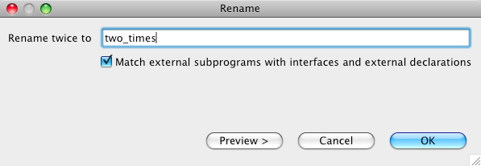 - Enter a new name for the variable/subprogram/etc.
- If you are renaming an external subprogram or a subprogram declared in an interface block, you may want to (un)check the box labeled Match external subprograms with interfaces and external declarations. If this is checked, the refactoring will attempt to find all external subprograms, EXTERNAL statements, and subprogram declarations in INTERFACE blocks that have the given name, and they will all be renamed.
- Click Preview to see what changes will be made, then click OK to apply them.
- Example:
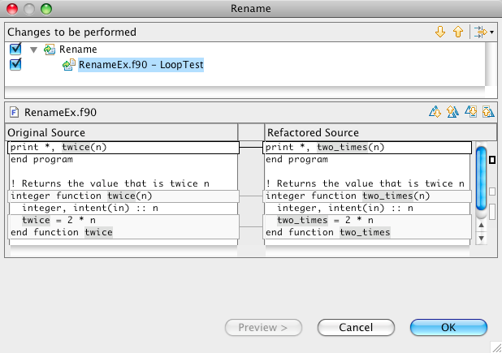
1. Dummy subprogram arguments cannot be renamed
2. Components of derived types cannot be renamed
3. Intrinsic subprograms and type-bound procedures (Fortran 2003) cannot be renamed
Encapsulate variable
- Description: Encapsulate variable creates getter and setter methods for the selected variable in the module where it is defined and changes variable's visibility to private. It also replaces all uses of that variable in all files to use getter and setter method calls1.
- Applies To:
- Variables defined in the module.
- Variables of all basic as well as user-defined types
- Does Not Apply To:
- Arrays
- Variables that are not defined in a module
- Parameters (i.e. integer, parameter :: CANNOT_ENCAPSULATE)
- Pointers (i.e. real, pointer :: CANNOT_ENCAPSULATE)
- Targes (i.e. integer, target :: CANNOT_ENCAPSULATE)
- Operation:
- Click on or select the name of variable you want to encapsulate.
- Click Refactor > Encapsulate Variable. The Encapsulate Variable dialog will appear.
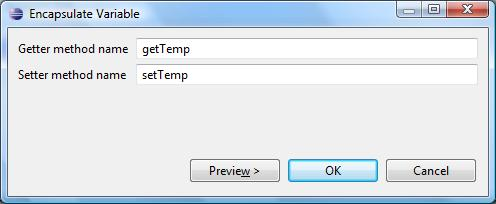temp"> - Enter names for getter and setter methods. You will be warned if the names that you want to assign to your getter and setter methods will be conflicting with some other identifier in any of the involved files.
- Click Preview to see what changes will be made, then click OK to apply them.
- Example:
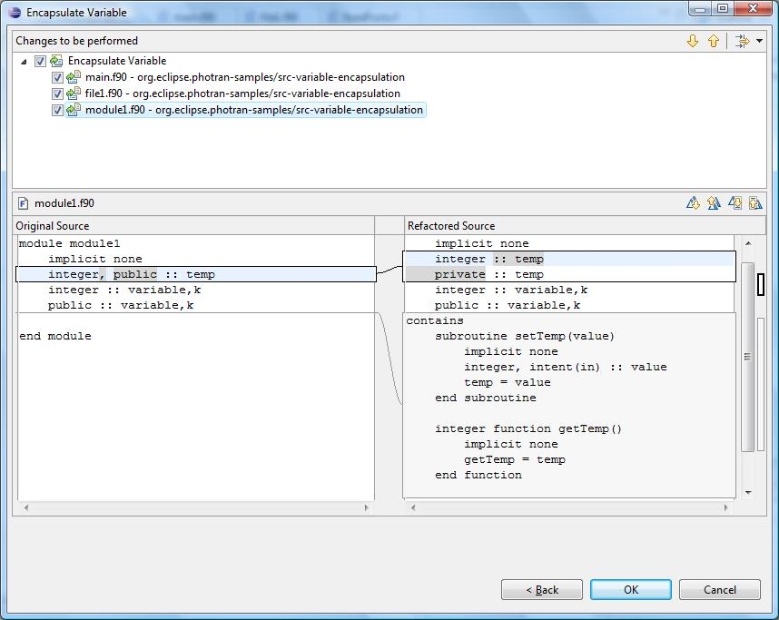temp">
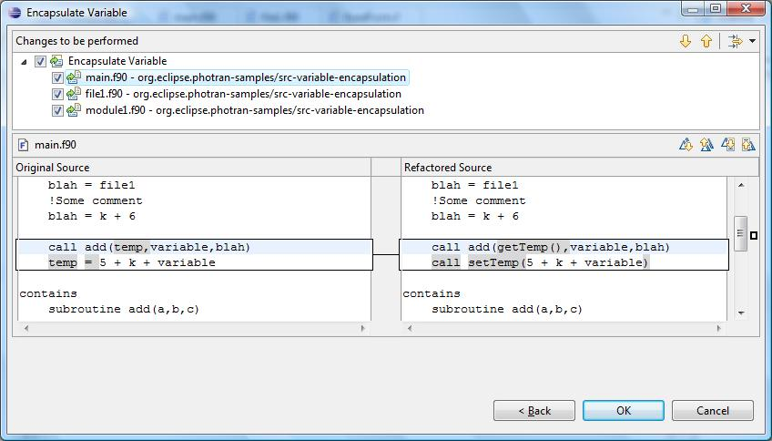temp">
1. If a variable is used as a parameter to a function/subroutine call, and that function changes
the value of the variable as a side-effect, that change will not be preserved.
Interchange loops
- Description: Swaps inner and outer loops of the selected nested do-loop1. This refactoring merely switches the inner and outer do-headers. It will not make any changes to the body of the loop.
- Applies To: Selected nested do-loop
- Operation:
- Select the nested loops you wish to interchange
- Click Refactor > Interchange Loops. The Interchange loops dialog will appear.
- Click Preview to see what changes will be made, then click OK to apply them.
- Example:
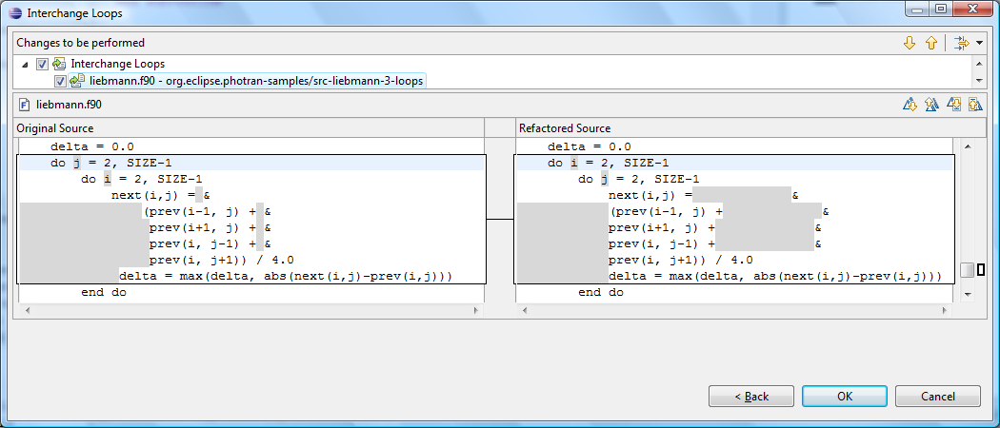
1. In order for refactoring to work correctly, there must be no statements before the second loop. If such statements exist, correctness of the refactoring is not guaranteed.
Introduce Implicit None
- Description: Adds IMPLICIT NONE statements to a file and adds explicit declarations for all variables that were previously declared implicitly.
- Applies To: All main programs, subprograms, and modules in one or more files.
- Operation:
- This is a multiple-file refactoring.
- To Introduce Implicit None in a single file, open the file in the editor and choose Refactor > Introduce Implicit None from the menu bar.
- To Introduce Implicit None in multiple files, select the files in the Fortran Projects view, right-click on any of the selected filenames, and choose Refactor > Introduce Implicit None from the popup menu.
- Click Preview to see what changes will be made, then click OK to apply them.
- This is a multiple-file refactoring.
- Example:
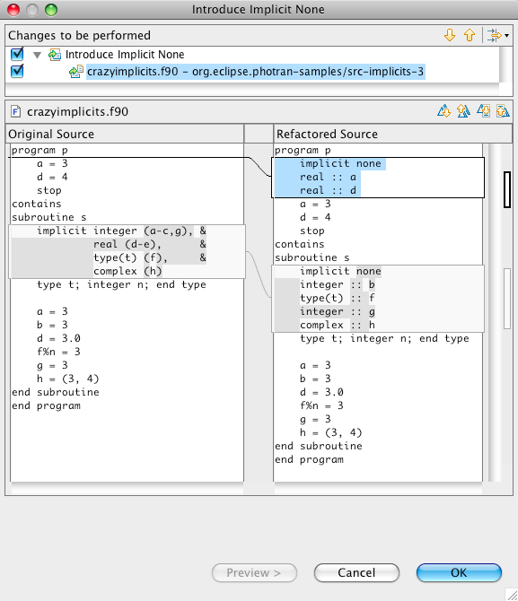
Move Saved Variables to Common Block
- Description: Move Saved Variables to Common Block creates a common block for all "saved" variables of a subprogram. Declarations of these variables in the subprogram are transformed such that they are no longer "saved". The generated common block is declared both in the main PROGRAM and in the affected subprogram. Variables placed in the common block are renamed such that they do not conflict or shadow other variables. The current implementation assumes that the subprogram is in the CONTAINS section of the PROGRAM.
- Applies To: Subprograms.
- Operation:
- Click on the declaration statement of a subprogram.
- Click Refactor > Move Saved Variables to Common Block.
- Click Preview to see what changes will be made, then click OK to apply them.
- Example:
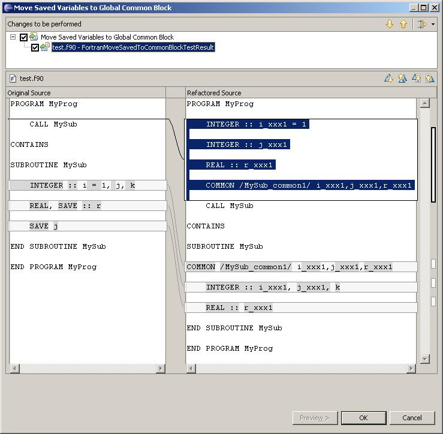
Replace Obsolete Operators
- Description: Replace Obsolete Operators replaces all uses of old-style comparison operators (such as .LT. and .EQ.) with their newer equivalents (symbols such as < and ==). and adds explicit declarations for all variables that were previously declared implicitly.
- Applies To: All uses of the following operators in one or more files: .LT. .LE. .EQ. .NE. .GT. .GE.
- Operation:
- This is a multiple-file refactoring.
- To Replace Obsolete Operators in a single file, open the file in the editor and choose Refactor > Replace Obsolete Operators from the menu bar.
- To Replace Obsolete Operators in multiple files, select the files in the Fortran Projects view, right-click on any of the selected filenames, and choose Refactor > Replace Obsolete Operators from the popup menu.
- Click Preview to see what changes will be made, then click OK to apply them.
- This is a multiple-file refactoring.
- Example:
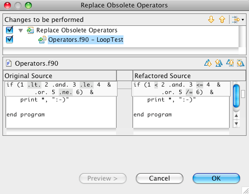
Standardize Statements
- Description: Standardize Statements rewrites all variables declarations, so that
- there is only one variable declaration per line, and
- every variable declaration contains a double colon (::).
- Applies To: All main programs, subprograms, and modules in one or more files.
- Operation:
- This is a multiple-file refactoring.
- To Standardize Statements in a single file, open the file in the editor and choose Refactor > Standardize Statements from the menu bar.
- To Standardize Statements in multiple files, select the files in the Fortran Projects view, right-click on any of the selected filenames, and choose Refactor > Standardize Statements from the popup menu.
- Click Preview to see what changes will be made, then click OK to apply them.
- This is a multiple-file refactoring.
- Example:
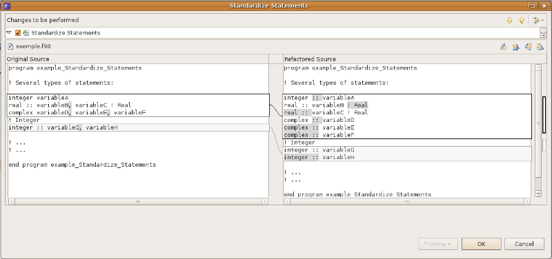
Remove Unused Variables
- Description: Remove Unused Variables removes declarations of local variables that are never used.
- Applies To: All main programs, subprograms, and modules in one or more files.
- Operation:
- This is a multiple-file refactoring.
- To Remove Unused Variables in a single file, open the file in the editor and choose Refactor > Remove Unused Variables from the menu bar.
- To Remove Unused Variables in multiple files, select the files in the Fortran Projects view, right-click on any of the selected filenames, and choose Refactor > Remove Unused Variables from the popup menu.
- Click Preview to see what changes will be made, then click OK to apply them.
- This is a multiple-file refactoring.
- Example:
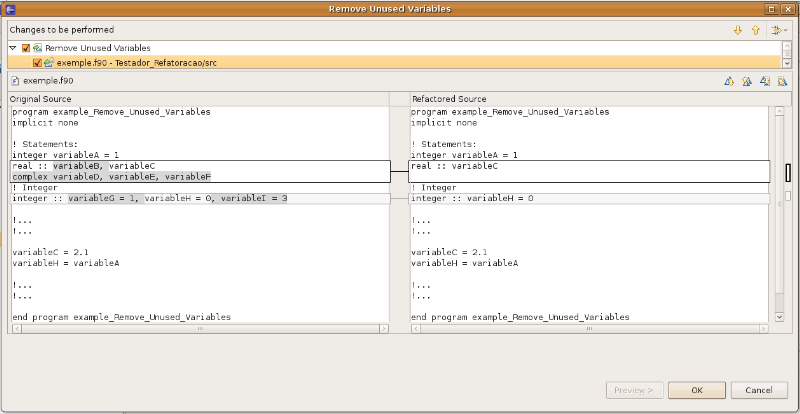
Data to Parameter
- Description: When a variable declared in a DATA statement is intended to be a constant, Data to Parameter can be used to change it to a variable with the PARAMETER attribute. Using the PARAMETER attribute makes it more clear which variables are constants and which ones are not; it can also result in performance gains, since it may allow an optimizing compiler to replace some variable accesses with the constant value.
- Applies To: All main programs, subprograms, and modules in one or more files.
- Operation:
- This is a multiple-file refactoring.
- To transform variables declared as data in variables declared with parameter attribute in a single file, open the file in the editor and choose Refactor > Data To Parameter from the menu bar.
- To transform variables declared as data in variables declared with parameter attribute in multiple files, select the files in the Fortran Projects view, right-click on any of the selected filenames, and choose Refactor > Data To Parameter from the popup menu.
- Click Preview to see what changes will be made, then click OK to apply them.
- This is a multiple-file refactoring.
- Example:
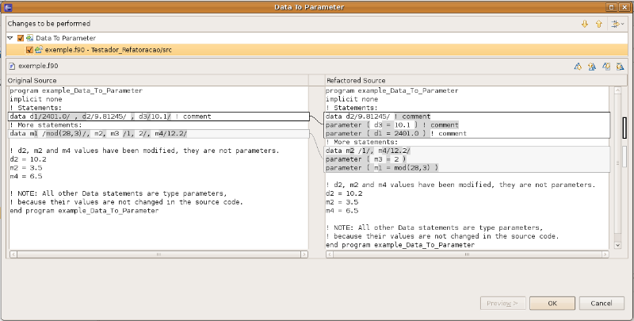
Extract Procedure
- Description: Extract Procedure removes a sequence of statements from a procedure, places them into a new subroutine, and replaces the original statements with a call to that subroutine. Any local variables used by those statements will be passed as parameters to the new procedure. This refactoring is generally used to make long procedures shorter.
- Applies To: A sequence of one or more action statements inside a procedure or main program.
- Operation:
- Select a sequence of one or more action statements in the editor. Be sure to include the newline following the last statement in the selection.
- Click Refactor > Extract Procedure... The Extract Procedure dialog will appear.
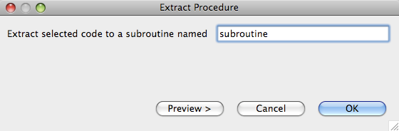 - Enter a name for the new procedure that will be created.
- Click Preview to see what changes will be made, then click OK to apply them.
- Example:
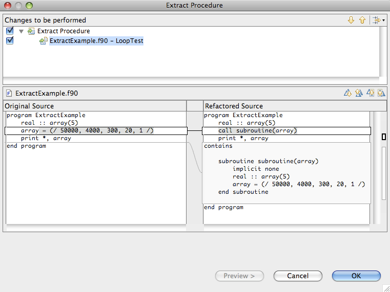
Extract Local Variable
- Description: Extract Local Variable removes a subexpression from a larger expression and assigns that subexpression to a local variable, replacing the original subexpression with a reference to that variable. This refactoring is usually used to eliminate duplicated subexpressions or to introduce explanatory variable names into complex expressions.
- Caveats: The refactoring will only be allowed to proceed if extracting the subexpression will preserve the associativity and precedence of the original expression. This refactoring assumes that the extracted expression has no side effects; it does not check whether moving the computation of the extracted expression will change the behavior of the program.
- Operation:
- Select an expression in the editor.
- Click Refactor > Extract Local Variable... The Extract Local Variable dialog will appear.
- Enter the type and name for the new local variable that will be created.
- Click Preview to see what changes will be made, then click OK to apply them.
Canonicalize Keyword Capitalization
- Description: Makes all applicable keywords the same case throughout the selected Fortran program files.
- Applies To: All keywords except those listed below.
- Does not apply to:
- Identifiers
- All constants except for integer constants and real constants
- Operation:
- This is a multiple-file refactoring.
- To Canonicalize Keyword Capitalization in a single file, open the file in the editor and choose Refactor > Canonicalize Keyword Capitalization from the menu bar.
- To Introduce Implicit None in multiple files, select the files in the Fortran Projects view, right-click on any of the selected filenames, and choose Refactor > Canonicalize Keyword Capitalization from the popup menu.
- Select Upper or Lower Case
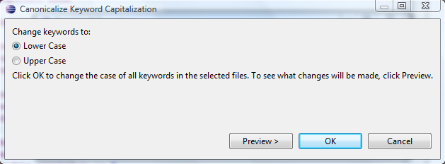 - Click Preview to see what changes will be made, then click OK to apply them.
- This is a multiple-file refactoring.
- Example
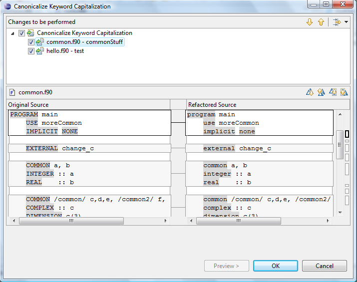
Make COMMON Variable Names Consistent
- Description: Fortran allows different definitions of a COMMON block to give the same variable different names. This is confusing. This refactoring gives the variables the same names in all definitions of the COMMON block.
- Applies To: All COMMON blocks with a valid name.
- Does not apply to: COMMON blocks with a NULL name.
- Operation:
- Select the name of the COMMON block in the editor which you wish to make variable names consistent for.
- Choose Refactor > Make COMMON Variable Names Consistent form the menu bar.
- Enter the new names which you wish to give the COMMON variables. The default new names are the original names in the selected block with "_common" appended.
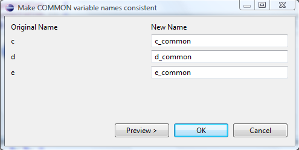 - Click Preview to see what changes will be made, then click OK to apply them.
- Example
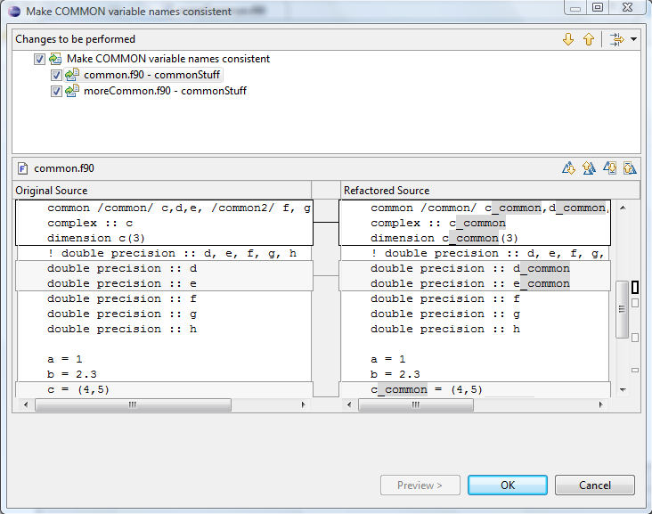 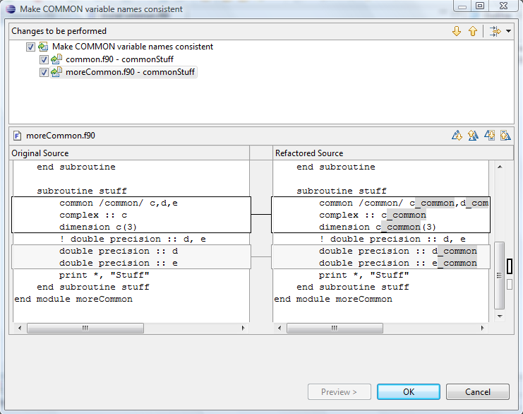
Add ONLY Clause to USE Statement
- Description: Creates a list of the symbols that are being used from a module, and adds it to the USE statement.
- Applies To: All modules containing public definitions.
- Does not apply to: Empty modules or modules with only private entities.
- Operation:
- Select the name of the module in the USE statement you wish to add an ONLY clause to.
- Choose Refactor > Add ONLY clause to USE statement.
- Select which module entities you wish to include in the ONLY list. Any entities in an existing ONLY list will already be selected and can be deselected to be removed.
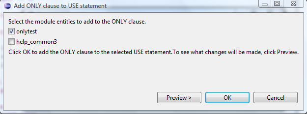 - Click Preview to see what changes will be made, then click OK to apply them.
- Example
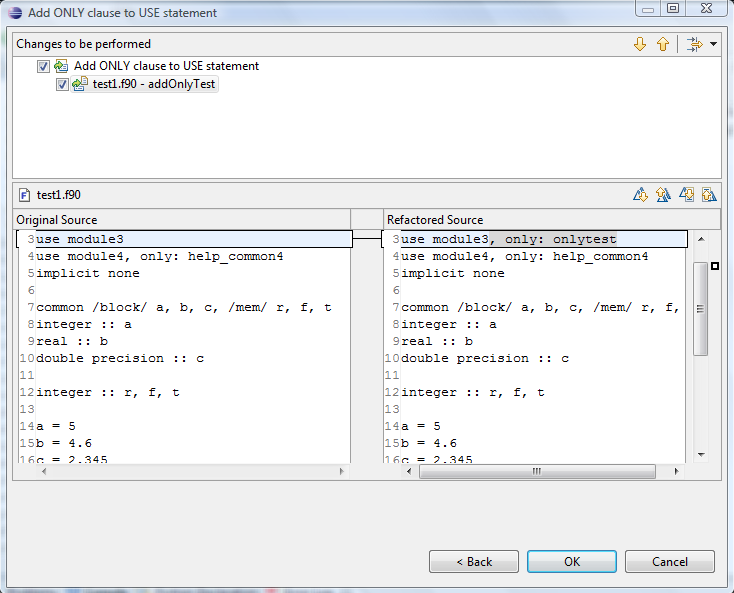
Minimize ONLY List
- Description: Deletes symbols that are not being used from the ONLY list in a USE statement.
- Applies To: USE statements with an ONLY clause.
- Operation:
- Select the name of the module in the USE statement you wish to minimize the ONLY list for.
- Choose Refactor > Minimized ONLY list for Selected module.
- Click Preview to see what changes will be made, then click OK to apply them.
- Example
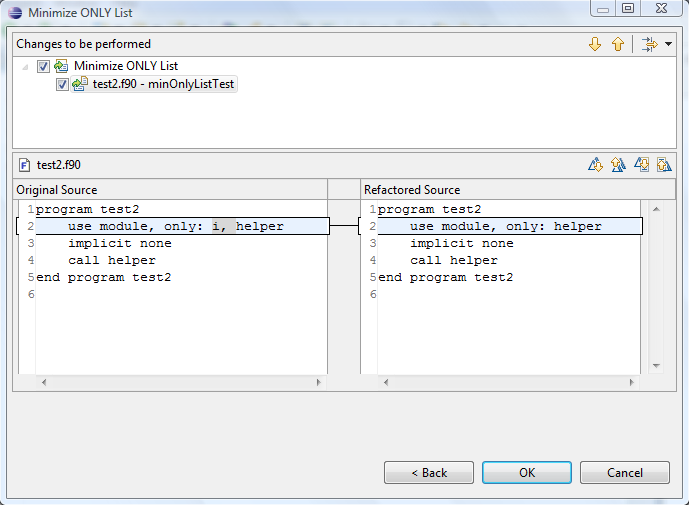
Make Private Entity Public
- Description: Changes a module variable or subprogram from PRIVATE to PUBLIC visibility, and checks that it won't conflict with any existing name where that module is USEd.
- Applies To: Variables, subroutines, functions.
- Does Not Apply To: Intrinsics, Externals, Interfaces.
- Operation:
- Select the name of the private entity you wish to make public.
- Choose Refactor > Make Private Entity Public.
- Click Preview to see what changes will be made, then click OK to apply them.
- Example
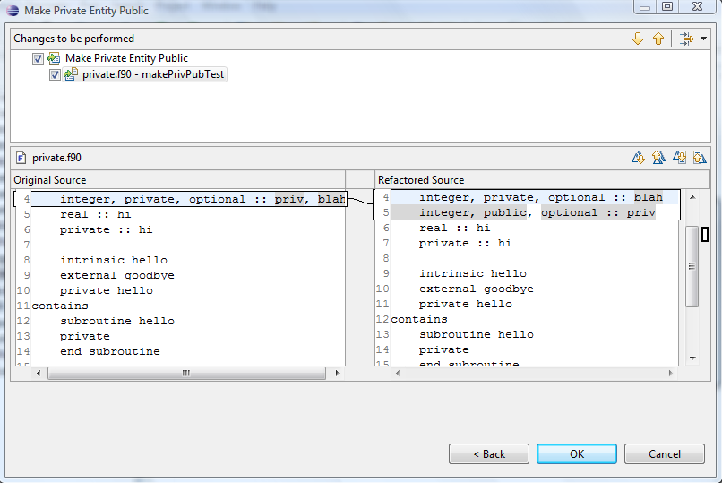